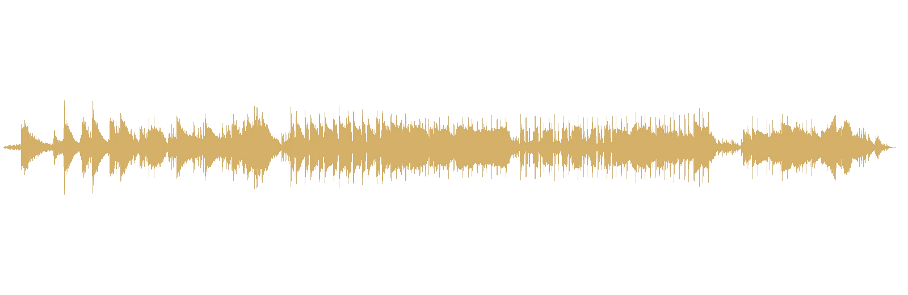
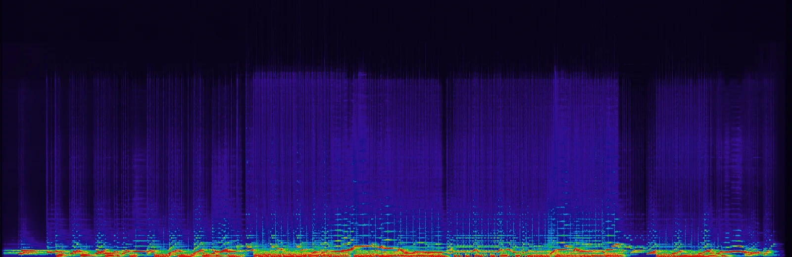
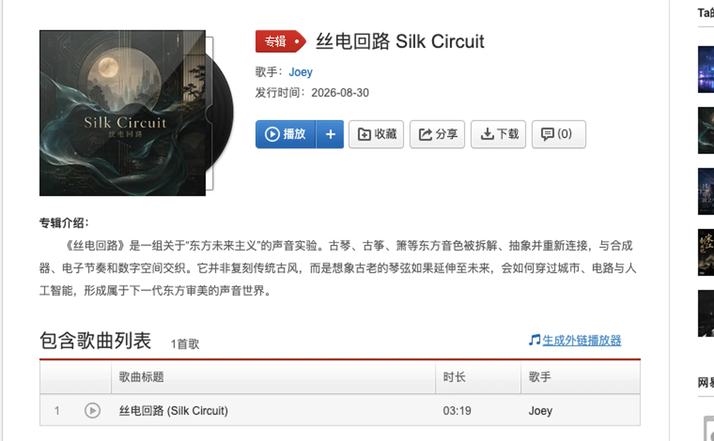

The final Neon Dream WAV landed in my Downloads folder at 8:35 p.m. Forty-five minutes later, SILK CIRCUIT.wav followed. The second file was 199.64 seconds long at 48kHz stereo. NetEase Cloud Music displays it as 3 minutes 19 seconds.
The two files sit close in time, and the sounds head off in two directions. The first track looked at how a future city could hold solitude. Silk Circuit asks something narrower: after an Eastern string enters a circuit, what does it turn into? A question this narrow has to be reached through one tradeoff after another later on. A narrow question has one advantage. Whether the answer is right, you know it on first listen.
Eastern futurism needs both ends to hold. Listeners should recognize where the sound came from and hear that it has travelled somewhere else.
Setting the word guofeng aside
Guofeng is too big a word. It can point to instruments, or to melody, lyrics, costume, and a whole set of images that finished maturing long ago. Hand the word straight to a generative tool and the result quickly grows the look of a costume-drama title sequence. That road has its own audience; this time I wanted to go around it. I like those images too. They're just already too full. There's no room left in them for my decisions.
Going around it means not letting one word settle the whole picture for me. Once a costume-drama title sequence shows up, the guqin turns into set dressing, the xiao into atmosphere, the timbres into wallpaper. Pretty, and nothing happens. I wanted the opposite direction: every timbre walks in carrying its own history, then gets re-wired on the circuit, and whether the wiring took, the ear knows in a second.
The method was to trade the big word for materials. I kept the guqin, guzheng, and xiao because those timbres carry a clear origin; one note and you know where they come from. Inside the work they get taken apart, abstracted, and reconnected. Synths take care of the unfamiliar space. Electronic rhythm pushes time forward. Digital textures leave a trace of the artificial. The old string is still there; the buildings around it have been swapped.
The album description uses the phrase "Eastern futurism." I let it stay because it describes a relationship. The Eastern timbres never get arranged into a display case, and the future wasn't rigged up out of a few cyber blips. The two sides have to change each other inside the same piece of music, with neither one standing in as the other's backdrop. Whether the relationship holds gets judged again on every new version, and the standard for the judgment is that both ends stay audible.
In the waveform, you can watch the track move forward

Silk Circuit runs about forty seconds longer than Neon Dream, and its sections read more clearly. The extra forty seconds aren't a freebie: the sections get room to breathe, and only with that room can the dip exist. The opening doesn't hand over all the materials at once; the steady energy is stacked in later. The space held back at the start earns its keep, because it sets the size of everything stacked after it. In the middle-to-late stretch there's one clear notch, as if the circuit breaks for a moment and then connects again.
The first track kept its energy steady from head to tail. This one dares to cut once. A cut is content too. I listened to that cut very closely. It breaks clean, and the way back doesn't cheat.
I love this spot. The “circuit” in the track's name finally has an audible action. Connection happens, connection briefly fails, and when the current comes back, what came before doesn't repeat itself unchanged. Hearing that notch was when I knew the name wasn't wrong. Title and structure meet here, and the track grows its own skeleton.
The spectrogram tells me to use fewer pretty adjectives
Electronic music gets described with a long queue of atmosphere words. Deep, ethereal, futuristic, mysterious; any of them seems to fit under any track. Swap those words around, and nobody would notice. A judgment has to land on something visible. Whatever the final audio left behind, the spectrogram lays out.

The bottom of the spectrogram stays lit the whole way, while the middle holds many separated lines. They give the sound a fineness like silk and keep the grain of the plucked-string timbres. The spatial texture above never presses all the way down. Looking at this chart, I can say it more exactly: the point of this track is the connection, and the materials still keep a little gap between them. Whether the gap is there is more accurate than any adjective.
Joining silk and circuitry on the cover
The cover I finally chose is also 1,254 pixels square. A round moon gate sits at the center of the frame, with teal-lit towers in the distance. A few translucent silk ribbons cross the foreground, and gold circuit lines run along the dark walls. Strings hang down from the top and pass through the title together with the circuit. The moon gate is round, the circuit lines are straight, and the silk threads pass between the two. Three geometries in one image, and somehow it doesn't tangle.
This image is AI-generated, and some of the buildings and lines in it match no real place. It's a concept image. My reason for choosing it is direct. Shrunk down, the moon gate and the silk are still there, and the black, gold, and teal haven't smeared into one blot. In the NetEase album list it can stand apart from the blue-violet Neon Dream, and even through a thumbnail you can tell they're two tracks. The cover and the sound get judged by the same rule: both have to hold up at a very small size. The thumbnail is the exam.
The release steps belong to the work
Uploading this track, I picked SILK CIRCUIT.wav, then selected the cover file separately. It's an instrumental, so the lyric field again says there are no lyrics. The work type went in as original, the AI source went in truthfully, the instrumental status was written out, and the rest was left to the ear. The platform also wanted genre, mood, and scene, and right there I paused. Electronic alone would drop the guqin and the xiao; Eastern alone would circle back to that big word. The directions I gave in the end were electronic, Eastern, and ambient, and each word has a counterpart in the track: the synths, the qin and xiao, and the space laid underneath the whole time.
There was no romantic production scene in this part. A few dropdowns, two file selections, one publishing confirmation, plus reopening the page after it went live. Before pressing publish, I read the description over once more, to be sure it wasn't singing the track larger than it actually is. But once an AI track reaches a public platform, these are the things a listener touches first. Don't begrudge the smallness; this is the listener's order of contact. The track name, the cover, the duration, the description, and that one play button decide together whether they'll keep listening.

I also placed it in my site's music list, right behind Neon Dream. With the two covers side by side, one is a blue-violet city in night rain and the other a moon gate woven from black, gold, and teal. The sound directions, the colors, and the titles all separate, and a reader can still tell the two came out of the same AI music experiment. One experiment growing two different faces makes me happier than nailing down one unified style. That relationship is more solid than hanging the title "cross-disciplinary creator" on myself.
What remains after the fast forty-five minutes
The timestamps of the two final WAVs are only 45 minutes apart, and that speed of course comes from AI. The trouble that speed brings is practical too. I can own a pile of versions fast, and every one of them sounds finished. The more complete they get, the easier it is for me to mistake “already listenable” for “worth keeping.” I was standing right next to that pit. Some versions sound whole on the first listen, then give themselves away after a few more: the melody is flattering you, the textures are piling up, and the world hasn't moved one step. It would be a lie to say letting go didn't hurt. But kept, it would wash the narrow question away.
The method I gave myself this time is clumsy. First ask whether the work held on to one concrete question. Then whether the sound materials each have their own place. Last, check whether the cover and the description talked it up bigger than it is. The clumsy way isn't fast, and the fast way isn't reliable. After those three steps, keep or not has grounds. Silk Circuit stayed, because it really did wire the Eastern timbres and the digital space together, and kept both ends audible.
AI music walked me back into work I know well from design. The tool supplies proposals; I narrow the question, build the judgment, and sign the final choice. Music is more subjective than an interface, and no usability test announces the correct version for me. When 3 minutes 19 seconds finish, whether I want to press play one more time is already a strict standard. It isn't a refined standard, but there's no dodging it. Ask it every time, and after enough times it turns into taste.
Checks for the next Eastern-futurist track
- Name the traditional timbre that should survive and decide whether its identity comes from tone, gesture, or melody
- Give the future a concrete material. State what the synth, electronic rhythm, and spatial texture each do.
- Replay the section that sounds most like familiar costume-drama music and tighten it if it pulls the whole track away
- Use the waveform and spectrum to locate questions, then return to listening for the decision
- Keep AI provenance and instrumental status visible when the track becomes public
- Silk Circuit on NetEase Cloud Music for the title, artist, date, duration, and album description
- The final local file SILK CIRCUIT.wav, 199.64 seconds at 48kHz stereo, generated the waveform and spectrogram above.
- The cover is an AI-generated concept image. The release screenshot comes from the public NetEase page on August 30, 2026.